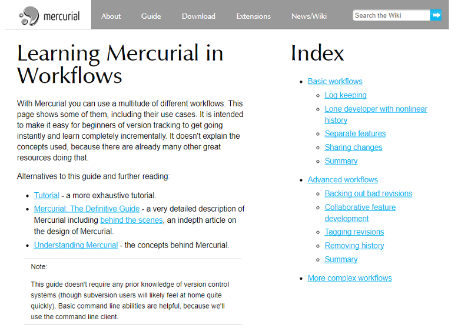

Сервіси для групової розробки
GitHub
GitHub — один з найбільших веб-сервісів для спільної розробки програмного забезпечення. Існують безкоштовні та платні тарифні плани користування сайтом. Базується на системі керування версіями Git і розроблений на Ruby on Rails і Erlang компанією GitHub, Inc (раніше Logical Awesome). Сервіс безкоштовний для проектів з відкритим вихідним кодом, з наданням користувачам усіх своїх можливостей (включаючи SSL), а для окремих індивідуальних проектів пропонуються різні платні тарифні плани.
Переваги
Можна шукати програмістів по країні і використовуваній мові програмування.
Пропонує хостинг сайтів.
Є інтеграція з IRC, Jabber, Jira, MantisBT, Bugzilla, підтримка Post-Receive URLs і багато чого ще, до того ж всі ці компоненти - OpenSource;
GitLab
GitLab — сайт та система керування репозиторіями програмного коду для Git. Оpensource-стартап, співзасновником якого є харків'янин Дмитро Запорожець.
Переваги
Власна вікі та система відстеження помилок
Приватні репозиторії для безкоштовних підписників.
можливість розгорнути систему на сторонніх серверах.
Bitbucket
Bitbucket — веб-сервіс для хостингу проектів на базі систем керування версіями: Mercurial та Git (з жовтня 2011). Bitbucket надає як безкоштовні так і платні послуги. Bitbucket є аналогом GitHub, проте на відміну від GitHub, у якого при безкоштовному профілі файли зберігаються лише у відкритому доступі, Bitbucket дозволяє безкоштовно створювати приватні репозиторії з можливостю спільної роботи з файлами до 5-ти користувачів.
Переваги
Безкоштовний дисковий простір до 2 Гб
Необмежена кількість відкритих репозиторіїв
Необмежена кількість приватних репозиторіїв (до 5-ти користувачів)
Team Foundation Server (TFS)
Team Foundation Server (скорочено TFS) – продукт корпорації Microsoft, який є комплексним рішенням, що об'єднує в собі систему керування версіями, збір даних, побудову звітів, відстеження статусів та змін по проекту, тестування та призначений для спільної роботи над проектами з розробки програмного забезпечення. Цей продукт доступний як у вигляді окремого програмного засобу, так і у вигляді платформи для Visual Studio team System (VSTS).
Переваги
TFS не містить ніяких користувацьких інтерфейсів, але надає веб-сервіси, які можуть бути використані клієнтськими додатками для самостійної інтеграції в функціональність TFS
Репозиторій документів використовується як для елементів проекту, так і для відстеження ревізій (документування змін), а також для накопичення та обробки даних та генерації звітів.
Єдиний репозиторій на базі SharePoint, що містить зв'язну з проектом документації.
MERCURIAL
Mercurial — вільна розподілена система керування версіями файлів та спільної роботи, розроблена для ефективної роботи з дуже великими репозиторіями сирцевого коду. Mercurial спочатку був написаний для Linux, та пізніше портований під Windows, Mac OS X і більшість Unix-систем. У першу чергу він є консольною програмою. Всі його операції запускаються параметрами програми hg, назва якої походить від позначення хімічного знака ртуті.
Переваги
Для копіювання даних по мережі використовується HTTP і SSH, дані передаються в стислому вигляді.
Допускається довільне злиття окремих децентралізованих сховищ, які підтримуються окремими розробниками;.
Сховище реалізовано в журнальному вигляді — дані не заміщаються, а додаються. Ведеться журнал транзакцій.